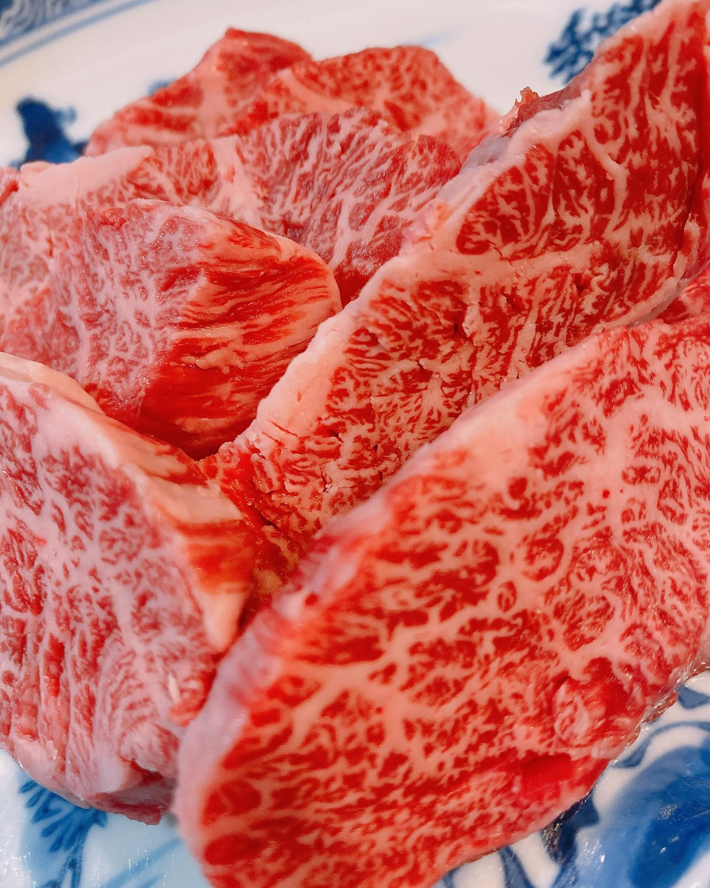
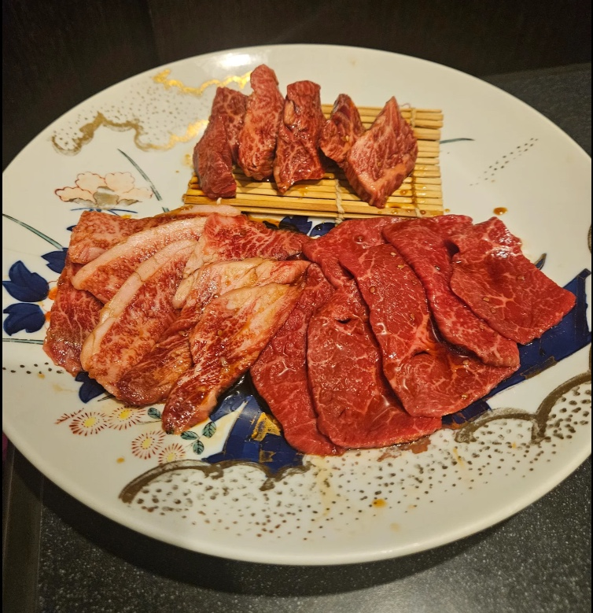
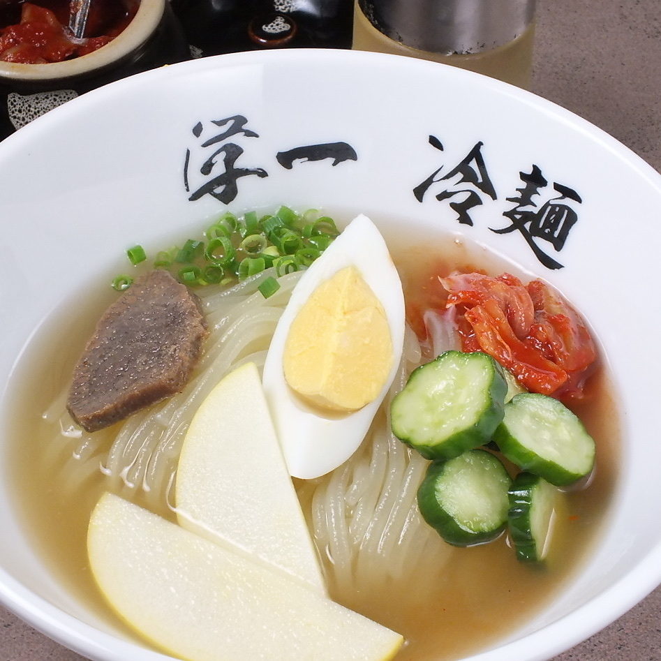
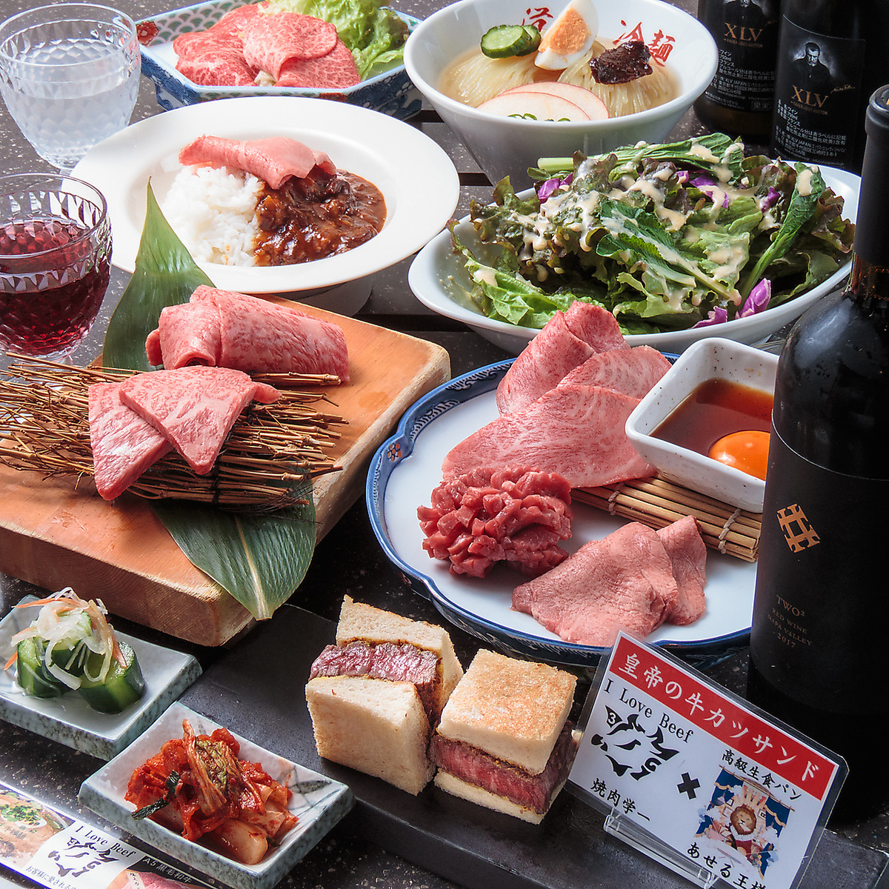

KUROGE WAGYU
黒毛和牛は、
「雌」だけ。
学一が仕入れる黒毛和牛は、雌牛のみ。焼き上がる香り、口に広がる旨み。選び抜いた肉を、お好みの部位からじっくりとお楽しみください。


01 — 学一のこだわり
焼肉だけでは終わらない。
もうひとつの楽しみが、学一にはあります。

KUROGE WAGYU
学一が仕入れる黒毛和牛は、雌牛のみ。焼き上がる香り、口に広がる旨み。選び抜いた肉を、お好みの部位からじっくりとお楽しみください。
MORIOKA REIMEN
つるりとした喉ごしと、牛の旨みが溶け込んだ冷たいスープ。丹念に仕立てる本場盛岡冷麺は、〆だけではもったいない、もうひとつの看板料理です。

02 — 店舗案内・ご予約
船橋と津田沼。
お近くの店舗から、ご予約を承ります。
JOIN OUR TEAM
店舗拡大のため、
正社員・アルバイトを
募集しています。
時給は経験により異なります。正社員の募集条件を含め、詳しくは店舗スタッフまでお問い合わせください。
採用について電話で問い合わせる料理やお店の最新情報をお届けします。